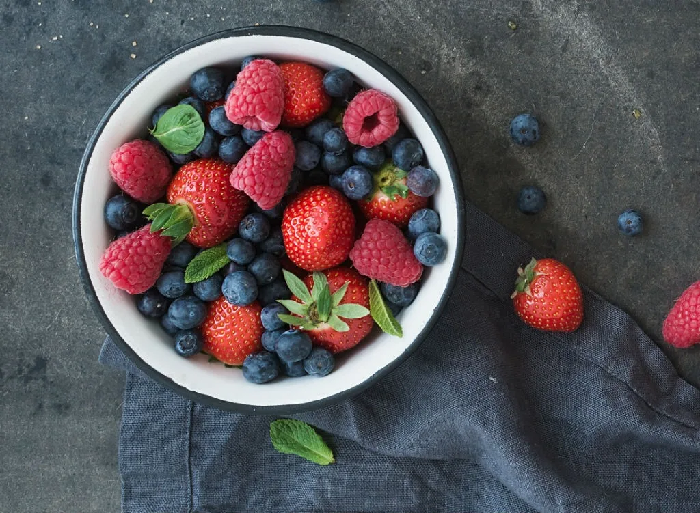
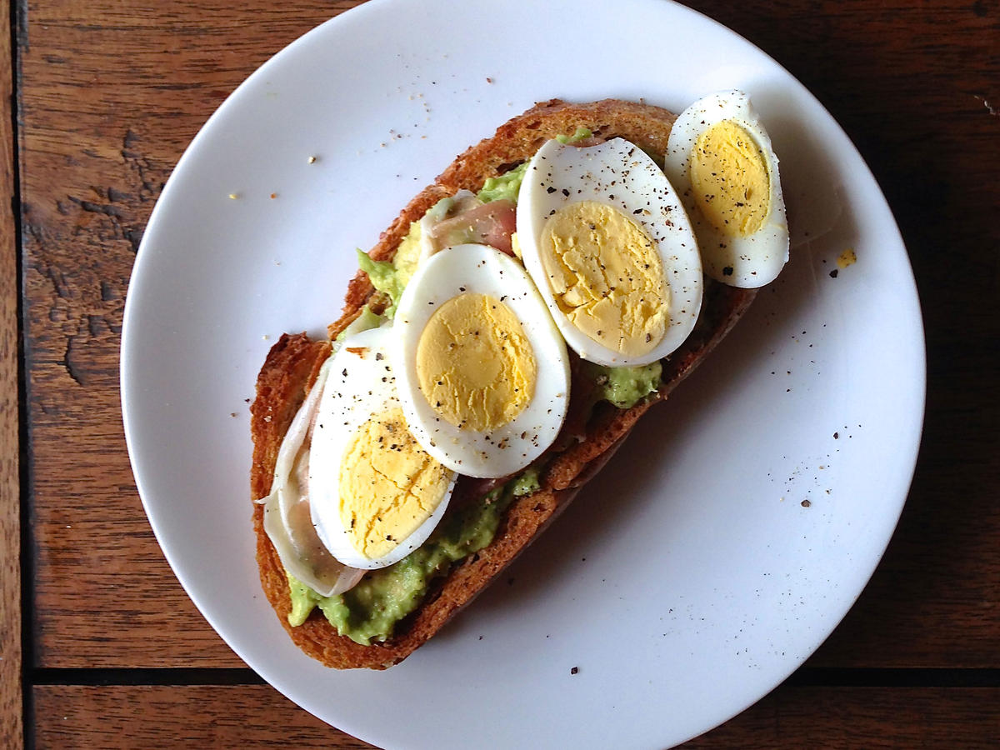
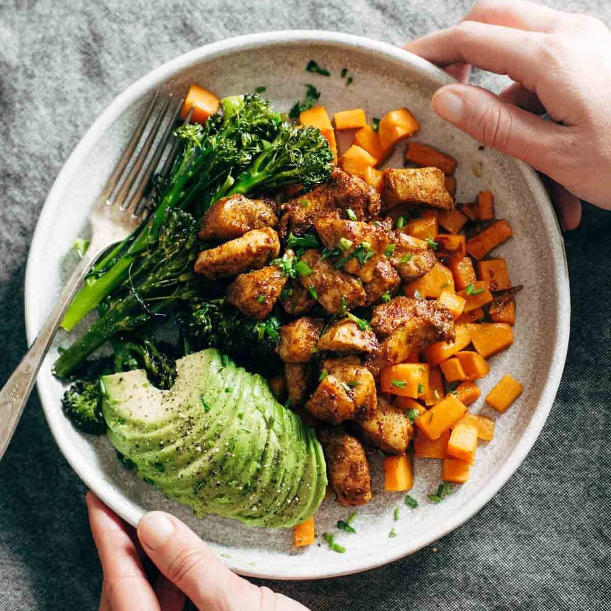
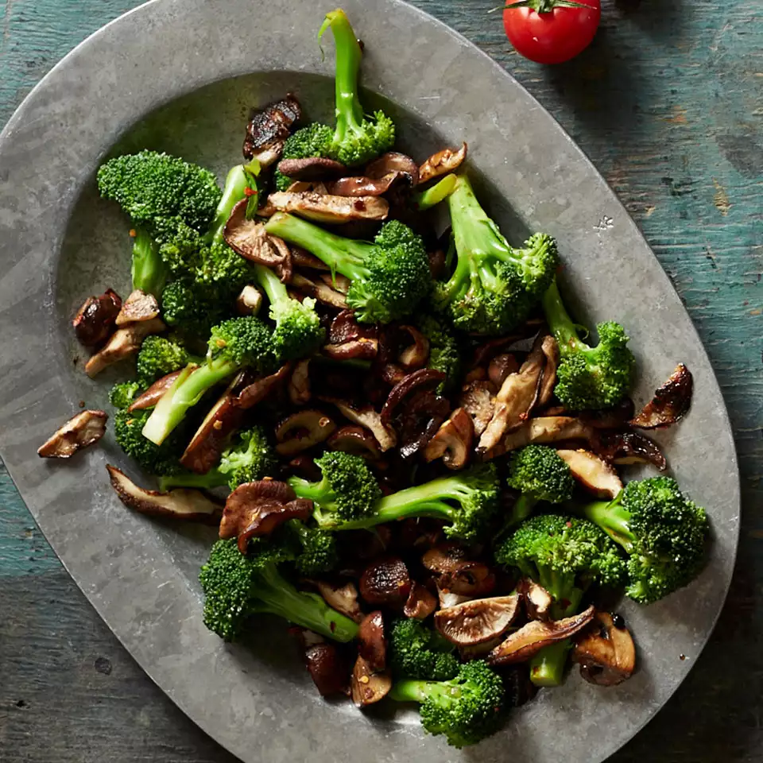
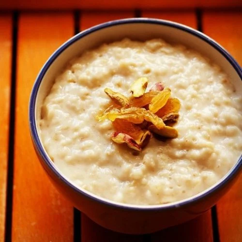
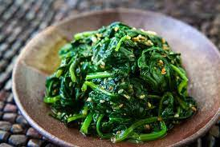
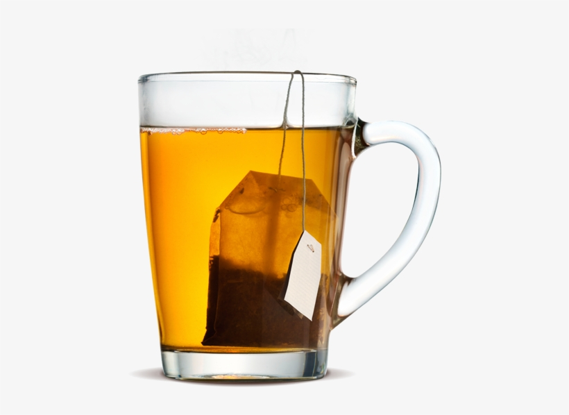
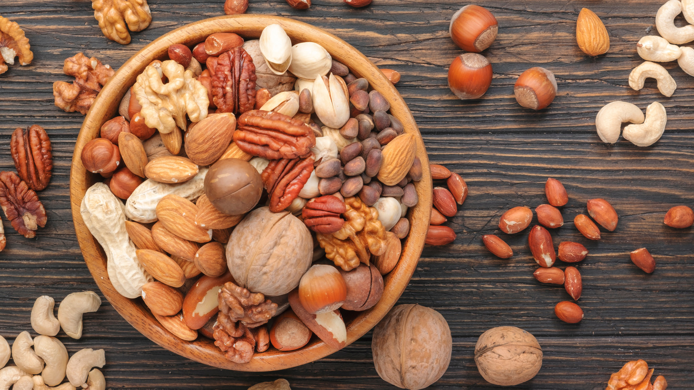
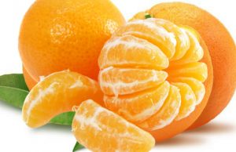
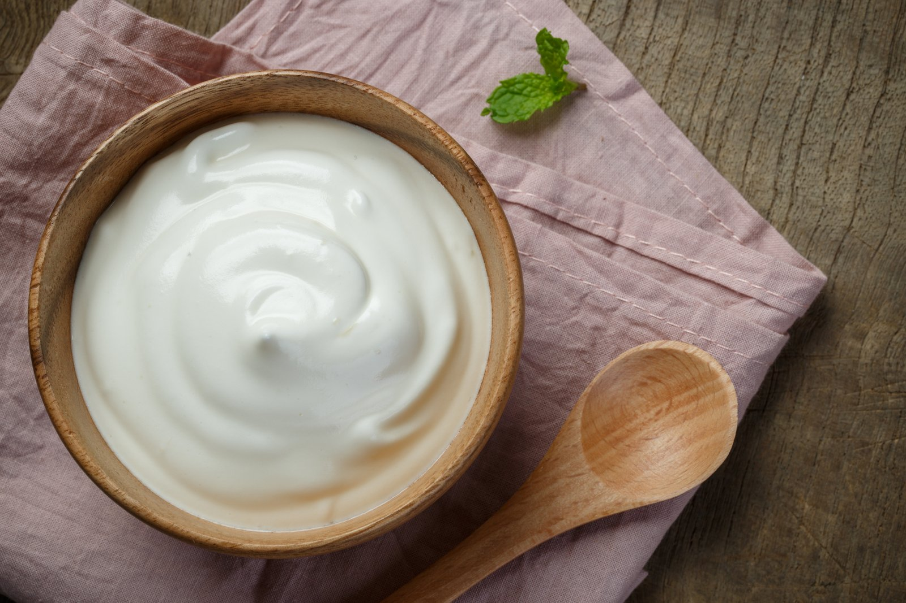

DIET

10 Everyday Superfoods
These 10 superfoods top the list of the best healthy foods to eat every day.
Superfoods are a little bit of hype but also some of the healthiest foods you should be eating everyday. While there's no real definition of a superfood, at EatingWell, we think of them as multitaskers-foods brimming with various disease-fighting nutrients and delivered in a delicious form (think: antioxidant-packed blueberries).
But some super-healthy foods are a little exotic and expensive to fit into our everyday diets (ahem, goji berry) or something-like, say, sardines-that you'd likely only have once in a while. We're all for trying new foods and variety is important for a healthy diet but we wanted to find the healthiest foods that were easy to incorporate into your diet. After all, it doesn't matter how healthy a food is if you're not eating it.
The healthiest foods and diets focus on real whole food. Lots of vegetables and fruits, whole grains, healthy proteins and fats. Added sugar and sodium is limited. There are plenty of other good-for-you foods that didn't make this list-like lentils, bananas and beets-but this list is a great place to start to add more healthy foods to your diet.
So, here is a list of 10 easy-to-eat, easy-to-find, everyday superfoods to keep eating healthy simple and delicious.
1. Berries

All berries are great sources of fiber-a nutrient that most Americans don't get enough of. Fiber helps keep your digestive system healthy and working properly (ahem...) and is good for your heart and your waistline, since it's so filling. All berries are good for you so be sure to mix it up. In the winter, when berries aren't in season, grab frozen (without sweeteners) which are great for smoothies, oatmeal, or thawed in yogurt. Raspberries (one of the best breakfast foods for weight loss) boast the most fiber at 8 grams per cup-and also contain ellagic acid, a compound with anti-cancer properties. The same amount of blueberries has half the fiber (4 grams), but is packed with anthocyanins, antioxidants that may help keep memory sharp as you age. A cup of strawberries contains 3 grams of fiber, but more than a full day's recommended dose of skin-firming vitamin C.
2. Eggs
A source of high-quality vegetarian protein, eggs might give your meal more staying power too. One egg has about 70 calories and 6 grams of protein. Plus, egg yolks contain lutein and zeaxanthin-two antioxidants that help keep eyes healthy. In fact, mounting research links lutein and zeaxanthin with reduced risk for age-related macular degeneration, the leading cause of blindness in people over 50. And lutein also may help to shield your skin from UV damage. Who knew the humble egg was so nutritious?
3. Sweet potatoes
Sweet potatoes are so brilliantly orange thanks to their alpha and beta carotene. The body converts these compounds into the active form of vitamin A, which helps keep your eyes, bones and immune system healthy. These phytochemicals also operate as antioxidants, sweeping up disease-promoting free radicals. One medium sweet potato-or about 1/2 cup-provides nearly four times the recommended daily value of vitamin A, plus some vitamin C and B6, potassium, manganese and lutein and zeaxanthin.
4. broccoli

This green powerhouse packs vitamins A, C and K (which helps with bone health), as well as folate. There is another reason broccoli frequently earns a top spot on "superfoods" lists: it delivers a healthy dose of sulforaphane, a type of isothiocyanate that is thought to thwart cancer by helping to stimulate the body's detoxifying enzymes.
5. Oats

Oats are a breakfast staple and quite the superfood. Eating more oats is an easy way to up your fiber intake, a nutrient most of us don't get enough of. Fiber is good for our guts and our waistlines and for keeping us full-all very important qualities in a breakfast food. Plus, oats are a whole grain and plain oats don't have any added sugar. For a superfood meal or snack start with plain oats and turn them into healthy meals and snacks like blueberry oat cakes, homemade granola to enjoy with fruit and yogurt or DIY energy bites with peanut butter.
6. Spinach
Dark leafy greens do a body good. Spinach is teeming with important nutrients: vitamins A, C and K-as well as some fiber, iron, calcium, potassium, magnesium and vitamin E. Studies have found that eating more greens, like spinach, can help you lose weight, reduce your risk of diabetes, keep your brain young and help fight off cancer.
7. Tea
Dark leafy greens do a body good. Spinach is teeming with important nutrients: vitamins A, C and K-as well as some fiber, iron, calcium, potassium, magnesium and vitamin E. Studies have found that eating more greens, like spinach, can help you lose weight, reduce your risk of diabetes, keep your brain young and help fight off cancer.
8. Nuts
What can't nuts do? They're packed with healthy polyunsaturated fats and magnesium, two important nutrients for heart health. These nutrients may also offer protection against insulin resistance, which can lead to diabetes. Antioxidant compounds found in nuts, including ellagic acid and resveratrol, can reduce the wear and tear on your body from free radicals. In turn, this lowers inflammation, which may reduce cancer risk. Plus, nuts provide insoluble fiber, which studies suggest may help you stay healthy by feeding beneficial gut bacteria. Spread nut butter on toast, grab a handful of nuts for a snack or make your own simple trail mix.
9. Oranges
Oranges are an underrated fruit. But the humble orange is an excellent source of vitamin C, just one large orange (or a cup of OJ) contains a full day's dose. Vitamin C is critical for producing white blood cells and antibodies that fight off infections; it's also a powerful antioxidant that helps protect cells from free-radical damage and plays a key role in producing skin-firming collagen. Oranges are also high in fiber and folate.
10. Yogurt
Yogurt contains probiotics or "good bacteria" that help keep our guts healthy. It's also rich in calcium. Just 1 cup of yogurt provides nearly half the recommended daily value of calcium and delivers phosphorus, potassium, zinc, riboflavin, vitamin B12 and protein. Choose Greek yogurt for an even bigger protein boost and whenever possible reach for plain. Flavored yogurts tend to have lots of added sugar which add calories without nutrition.